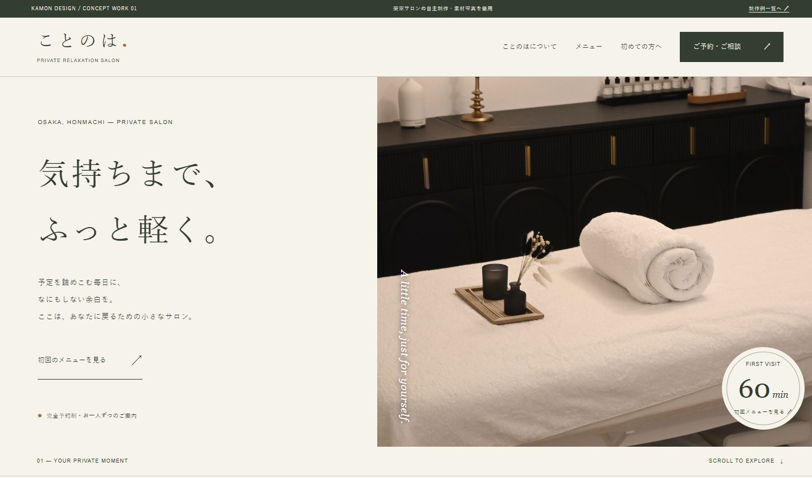
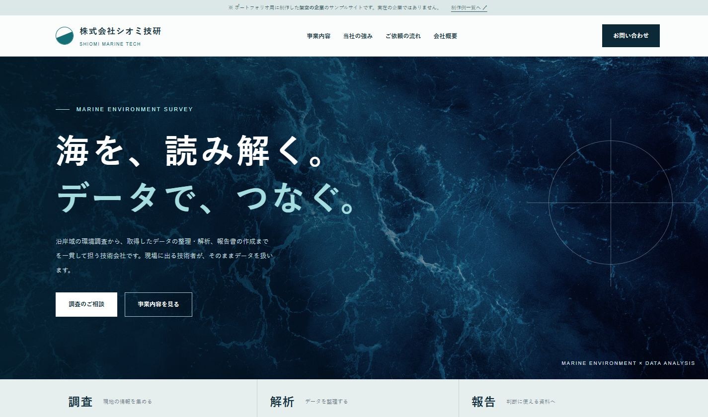
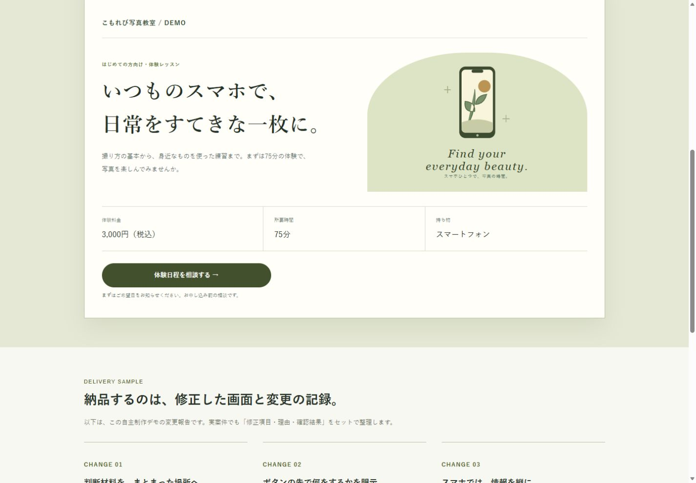
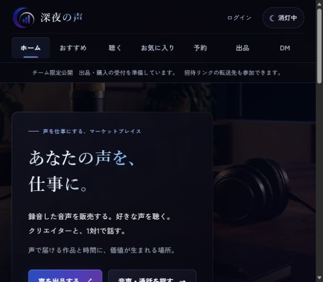
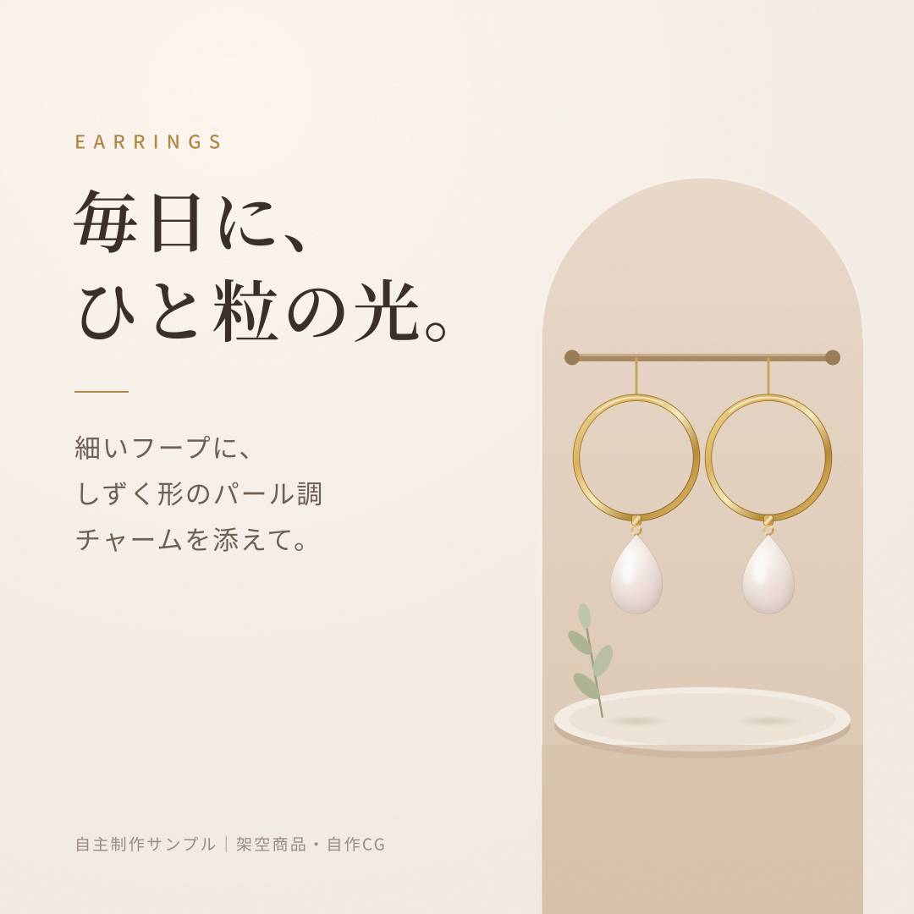
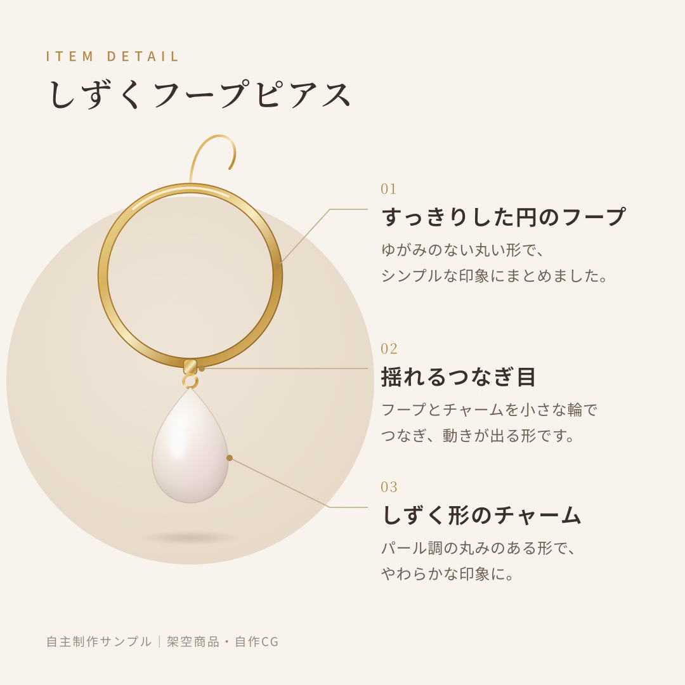

01 — KOTONOHALANDING PAGE

RELAXATION SALON
予約前の気になることを、
一つのページで。
初めての方が知りたい料金、施術の流れ、よくある質問を順に配置。写真と余白でサロンの雰囲気を伝えながら、サービスを理解して相談へ進める構成を考えました。
事業をつくる視点で、構成から実装まで。
サービスの強みも、料金も、相談先も。
初めて訪れた人が迷わずわかるページを、
あなたと一緒につくります。
01 / SELECTED WORKS
何を見せ、どこへ案内するか。
制作例とともに、その意図をご紹介します。
架空事業の制作例と、自主開発サービスをご紹介。

RELAXATION SALON
初めての方が知りたい料金、施術の流れ、よくある質問を順に配置。写真と余白でサロンの雰囲気を伝えながら、サービスを理解して相談へ進める構成を考えました。

CORPORATE WEBSITE
海洋調査の会社を想定し、事業内容から調査・報告までの流れを整理。写真と工程の図解を組み合わせ、依頼できる内容を具体的に見せています。

WEBSITE IMPROVEMENT
写真教室の同じ情報を、料金・所要時間・相談先が見つかる配置へ。デモでは修正前後を切り替えて、文章と画面の違いを確認できます。
04 / OWN SERVICE — 深夜の声
自主開発中の音声サービスで、WebサイトとUIを制作。「声を出品する」「音声・通話を探す」の入口を分け、提供する人と利用する人がそれぞれ進める構成を考えています。
実際のUIを見る ↗開発中の画面見本です。顧客への納品実績やサービスの稼働保証を示すものではありません。

05 / SOCIAL & PRODUCT IMAGE
同じ商品でも、紹介する画像と詳しく説明する画像では役割が違います。写真に添える言葉と配置を、その目的に合わせて考えます。


架空の商品をコードで描いたCGとレイアウトの自主制作。元データはHTML・SVGです。
掲載作品は自主制作で、顧客への納品実績や効果測定結果ではありません。架空事業のデモの予約・問い合わせは送信されません。
WHY KAMON DESIGN
相談する人と、手を動かす人が同じ。
言葉にしきれていない意図も伺いながら、
ページの内容と見せ方を一緒に決めます。
原稿の整理、デザイン、静的なHTML/CSSページの実装まで担当。工程ごとに、別の相手へ説明し直す手間を減らします。
自主開発中の「深夜の声」でもWebサイトとUIを制作。サービスの目的と、使う人が次に取る行動をつなげる視点を持ち込めます。
初回料金と制作範囲を明示。1ページや一部の修正から、やり取り・制作・確認の進め方を知っていただけます。
02 / SERVICES & PRICING
初めてのご依頼は、範囲を決めて頼みやすく。
以下の内容に収まる場合の固定料金です。
すべて税込。契約前に総額と納品物を確認します。
直す場所と内容が、決まっている方に。
制作目安：3〜5営業日
文章1ブロックの差し替え、画像1点の差し替え、指定した1要素の見た目の調整を、それぞれ1か所と数えます。文章は合計500字まで。新しいレイアウトの制作、原因調査が必要な不具合修正、画像の合成は含みません。
説明の長さや、情報の順番が気になる方に。
制作目安：5〜7営業日
文章整理、ボタンの追加・移動、見出しの調整、既存情報の並べ替えなどを、事前に5点まで決めます。文章整理とボタンは5点の中に含みます。ページ全体の再デザイン、新規取材、独自調査、フォーム開発は含みません。
サービスを一つのページで案内したい方に。
制作目安：7〜10営業日
①冒頭の紹介 ②サービスの特徴 ③メニュー・料金 ④利用の流れ ⑤よくある質問 ⑥アクセス・相談先、のように内容を分けます。写真・ロゴ・掲載情報はご支給ください。デザインは1方向で進め、原本の文字数・画像数・図表量を確認して対象範囲を見積書に明記します。長い商品一覧、複雑な図解、独自アニメーション、新規原稿の一からの執筆、CMS・フォーム・予約・決済機能は含みません。
初めてのご依頼者さまにつき、上記いずれか1プラン・1案件が対象です。修正プランは編集可能なHTML/CSS、新規LPは原稿・写真・ロゴ等をご支給いただきます。素材は使用許可のあるものをご用意ください。既に提示・合意した個別見積もりは、この料金へ自動変更しません。
対象外の作業・数量追加・方向性の変更は、内容と追加額をご案内し、ご了承後に着手します。無断で追加請求しません。当方のミスや合意仕様の漏れは、修正回数と別に訂正します。
契約・必要な入金・素材・仕様がそろってからの日数です。お客さまの確認待ちは別途必要です。納品日と検収日を契約前に決定します。公開作業・サーバー費・有料素材費は含みません。
対象画面・枚数・支給物・納品形式を確認し、内容に合う固定見積もりをご案内します。制作会社さまとの工程分担にも対応します。
03 / BEHIND THE DESIGN
「何を伝えれば、仕事の価値が伝わるか」。
見た目を考える前に、そこから始めます。
将来自分で事業を立ち上げるために、仕事として通用するスキルを身につけたい。それが、Web制作を学び始めた理由です。知人の会社のホームページ制作もきっかけとなり、デザインだけでなくWeb開発まで学んできました。
現在は自主開発中の音声サービス「深夜の声」のWebサイトやUIも制作しています。自分で事業を形にする立場だからこそ、見せたいことと、利用する人が知りたいことの両方を考えて制作します。
「深夜の声」のUIを見る自主開発中のサービスです。顧客向けの納品実績とは区別しています。
制作・実装にAIも活用し、方向性の判断と最終確認は掃部が担当します。案件ごとの利用条件を確認し、非公開資料を許可なく外部AIに入力しません。
04 / HOW WE WORK
専門用語や完成した仕様書がなくても大丈夫です。
まずは、作りたいこと・困っていることから。
対象ページと目的、素材、ご希望時期を確認。納品物・総額・修正・納期を揃えてから、契約へ進みます。
契約と必要な入金・資料の確認後に制作。見せ方を確認し、合意した範囲の修正を反映します。
合意した画面幅で文章・画像・リンクを確認。納品ファイルと確認内容をお渡しし、検収へ進みます。
05 / QUESTIONS
対象URLと「料金をわかりやすくしたい」などの目的をお知らせください。対応可否・制作範囲・見積もりのご相談に費用はかかりません。詳しい診断や試作が必要な場合は、有料範囲を事前にご案内します。
サービスの説明・料金などの正確な情報、使用許可のある写真・ロゴ、参考サイトをご用意ください。小修正は確定した文章・画像の支給が前提です。文章・相談先の見直しとLP制作では、記載範囲の情報整理を含みます。支給できないものがあれば、見積もり前にご相談ください。
初稿への修正指示をまとめて1度お送りいただき、合意した方向内で反映する単位です。色・文字・余白などの軽微な調整が対象です。構成の大幅変更や新しいページ・機能の追加は、別途お見積もりします。
掲載プランは静的なHTML/CSSのページが対象です。CMSや予約・決済などの機能は含みません。既存環境を確認し、実際に対応できる範囲をお伝えします。
数値の成果は保証できません。サービス内容や相談先をわかりやすくするための構成・文章・デザインを考え、合意した制作物と表示・操作の確認結果を納品します。
LET’S MAKE IT CLEAR.
今のページと、ご希望を簡単に。
対応できる範囲・料金・進め方をお返しします。
CrowdWorks・Lancers等からお越しの方は、
ご利用の媒体内のメッセージからご連絡ください。
この欄からは送信されません。メールやご利用の媒体へ貼り付けてください。